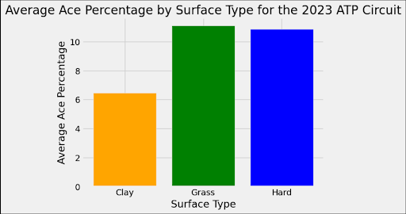
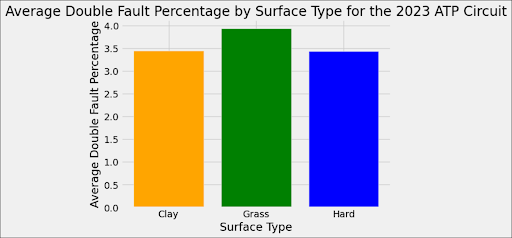
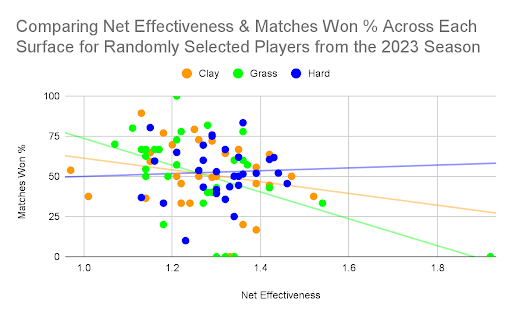
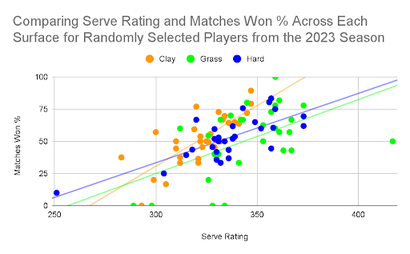
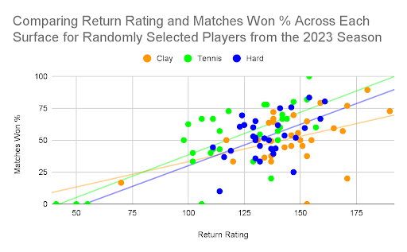
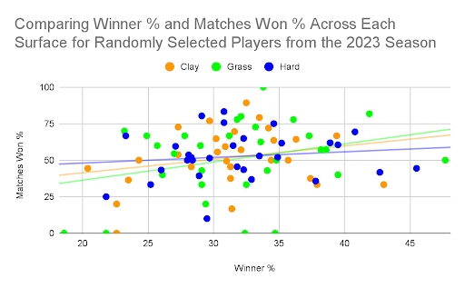

The Battle of the Surfaces: Determining the Ideal Playstyle for each Tennis Surface
By Alex Toohey | December 09, 2024

Nothing exemplifies both the beauty and peculiarity of the great sport of tennis quite like the “Battle of Surfaces” match held on May 2, 2007. It featured a clash of titans, with the “King of Grass” Roger Federer taking on the “King of Clay” Rafael Nadal in an exhibition match for the ages. Coming into the contest, Federer had won 48 straight matches on grass courts, while Nadal was riding a 72 straight win, 3-year unbeaten streak on clay. Although Nadal ended up winning a crazy match by way of a 3-set tiebreaker, the greater story lies in how it was possible for these two tennis juggernauts to be so insanely dominant on their respective surfaces. In this article, I will delve into the many statistical differences in play between the three main tennis surfaces (clay, grass, hardcourt), in an effort to determine the optimal playstyle for each one.
Surface Overview
Professional tennis is unique in that it is not played on a single standardized court surface year-round, and is instead split into different seasons based on the surface used. The clay season generally spans two months from April to June ending with the French Open, while the grass season is the shortest from early June to mid July ending with Wimbledon, and the hardcourt season is by far the longest, lasting essentially the rest of the year and containing both the U.S. Open (August) and Australian Open (January). Although individual courts can have varying effects on play based on their respective conditions and whether they are indoors or outdoors, these three surfaces each tend to affect the game in a distinct way regardless of where they are played. Clay courts are constructed by layers of crushed rocks covered by a thin coating of red brick dust that enhances absorption, and tend to have the slowest ball speeds, highest bounces, and highest spin rates of the three surfaces. On the other hand, grass courts are made by growing real grass, which needs to be extensively maintained, and generally have the fastest ball speeds, lowest bounces, and less spin as the ball skids with less absorption and friction. Finally, hardcourts, which are constructed with a mix of concrete and asphalt plus an acrylic layer on top, are somewhere in the middle of grass and clay, with ball speeds, bounce heights, and spin rates typically falling somewhere in between what would occur on clay and grass courts. While many tennis players and fans have claimed that these court surfaces have been adjusted to be more homogenous and standardize conditions across all matches in recent years, there are definitely still significant differences between them which have a massive impact on play across surfaces that I will explore in this article.
Comparing Statistics Across Surface Types
One of the key differences of play, especially between clay and the other two surface types, is that due to the ball generally bouncing slower and higher on clay, it typically gives more time for opposing players to react, naturally leading to a higher probability of shots being returned and therefore longer rally lengths on average. Furthermore, with slower and higher bounces on clay giving more time to react, there are also fewer aces, which is when a legal serve in-bounds is not even touched by the returner, leading to an instant point for the server without having to get into a rally.
The bar graph above depicts a large drop off in average ace percentage from grass and hardcourt to clay surfaces in 2023, which is exactly what we would expect to happen on a slower surface type. This dropoff is significant because a big serve and the ability to get aces are arguably the most important qualities a tennis player can have. The ability to get points and win games on your serve while getting into as few rallies as possible is crucial, especially when in tennis you pretty much have to win your service games to have a shot at winning the match. For this reason, the serve is often considered the most important shot in the game, as it is the only time a player has complete control of their shot with the opportunity to put immediate and often even insurmountable pressure on their opponent. However, as this bar graph depicts, a big serve may not be as big of an advantage on clay courts as it is on grass and hardcourts, as slower and higher bounces allow the opponent more time to react and return even the fastest of serves.
Another key statistic to look at across surface types is double fault percentage, which calculates the percentage of service points in which the server misses both their first and second serves, essentially giving their opponent a free point. Similar to how essential a big serve is, avoiding double faults is also extremely important because when you double fault you are both giving up the advantage you start the point with as the server who typically controls the first few shots, while you are obviously also losing a point at the same time.
This bar chart displays a less notable difference between the average double fault percentage across the three surfaces in 2023, with grass having the highest average double fault percentage, and clay and hard courts having around the same percentage. Although the reason for this difference isn’t as evident, it is likely due to the fact that players often change or adapt their playstyles based on the surface they are playing on. Players may try to serve bigger and faster on grass because they know if they get their serve in they will be most likely to get an ace on this fast surface versus on clay or hardcourt. However this would also probably lead to them missing more serves and consequently double faulting more in the process.
Correlations Between Key Statistics and Match Win Rates Compared Across Surfaces
In addition to seeing how important statistics differ across different surfaces types, analyzing and comparing correlations between key statistics and win rates across different surfaces will provide insights on which statistics and qualities are the most favorable and predictive of winning matches on each surface type, allowing us to better understand what qualities and attributes to look for in determining the optimal playstyle for each surface.
The overlaid scatter plot above compares net effectiveness, which is the percentage of the points a player wins at the net divided by the percentage of total points a player wins anywhere on the court, with the percentage of matches the player wins across the three surfaces. Because net effectiveness essentially quantifies how much better a player is at winning points via volleys at the net relative to how good they are at winning points in general, a positive correlation between net effectiveness and win rate would show that players who are strongest at the net compared to other facets of their game are more likely to win, while a negative correlation would show the opposite. Therefore, the extremely weak positive correlation for hardcourts versus the stronger negative correlations for grass and clay courts displayed above indicate that being stronger at the net compared to other areas is better for playing on hardcourt, while on grass and clay it is actually a bad thing to be stronger at the net than other areas as there is a negative correlation so match win rate tends to decrease as net effectiveness increases. These results are surprising as they imply that relative effectiveness at the net actually correlates with a lower win rate on grass courts, and players should instead focus on winning points outside of the net to increase their expected win rate, which is contrary to most popular beliefs often emphasizing the importance of strong net play and volleying on fast grass courts. However, it is also important to note that this correlation is based on a presumably representative but still somewhat small sample size of thirty players in 2023, so outliers could be significantly affecting it, while in addition only correlation and not causation can be implied.
This overlaid scatter plot compares serve rating, an advanced statistic that takes into account Ace %, Double Fault % and more to quantify the overall effectiveness of a serve in gaining an advantage and winning points, with match win rate across all three surfaces. As expected, a higher serve rating positively correlates pretty strongly with a higher match win rate across all three surfaces. But in our graph, it is evident that this positive correlation is much stronger for players on clay versus grass, which indicates that having a super effective serve that can succeed and perform well with all relevant factors taken into account, as calculated by serve rating, is more beneficial in contributing to win rate on clay versus grass. This may be because clay usually favors the returners more than usual with slower speeds and higher bounces, but exceptionally strong servers, as measured by a high serve rating, have a disproportionately high advantage if they can still serve effectively on this surface that generally has lower serve ratings on average. Also, another contributing factor to this disparity is that a higher double fault percentage significantly decreases serve rating, while we found earlier that double fault percentage is on average higher on grass surfaces than clay surfaces, which further suggests why this positive correlation between serve rating and win rate is greater on clay than grass.
Similar to the last one, this overlaid scatter plot compares return rating, an advanced statistic that fundamentally measures how good a player is at winning returns of serves, with win rates across the three surfaces. In this case, unsurprisingly higher return ratings are directly correlated with higher win rates for all three surfaces, but it is still insightful to note the stronger positive correlations for grass and hardcourt versus clay. This suggests that having an effective return of serve is even more important on faster grass and hardcourt surfaces than clay, which makes sense because the quicker serves and reaction times necessary on these surfaces mean that good returners are favored and expected to win even more than on slower clay surfaces where all returners are on more of an equal playing field.
Finally, this last overlaid scatter plot depicts the correlation across the three surfaces between win rates and winner %, which is the number of winners⸺regular shots similar to aces in that they land in bounds without being touched by the opponent giving the person who hit it a point⸺divided by the total number of points won. Although again there are weak positive correlations between winner % and match win rate across all three surfaces, the positive correlation is the weakest on hardcourt which implies that being aggressive and getting more of your points via winners is more beneficial on clay and grass courts in terms of positively contributing to win rate. On the other hand, this could mean that being more consistent and limiting unforced errors is more favorable for winning on a neutral surface like the hardcourt, which often balances out disparities between what we see on grass vs clay courts.
Conclusion
Based on these key metrics and correlations with win rates across the different tennis surfaces, we can derive some interesting conclusions on what qualities and play styles appear to be most optimal for each surface. Starting with grass, it seems that although points are quicker and the average ace percentage is higher on faster grass courts than any other surface, having an effective serve and volley doesn’t actually give you as much of an advantage as it does on other surfaces, while instead having an effective return, great groundstrokes, and aggressive play targeting winners is much more beneficial. On the other hand for clay surfaces, having a more effective serve than your peers actually seems to be one of the most important factors contributing to expected win rate, while relatively having a good return or strong net play isn’t as important. Lastly, for hardcourt surfaces, the optimal playstyle seems to be much more balanced which is expected with a more neutral surface, meaning having consistent groundstrokes, a decent serve, return, and net play are all what seem to correlate the most with expected win rate.
Although these statistics provide interesting insights on this great game, it once again important to note that no causation can be implied, and this relatively small sample size of 30 randomly selected players from the 2023 ATP season could contain outliers skewing these statistics and correlations we notice. In addition, there was much less data for matches played by players on grass and clay, as their respective seasons are much shorter than the hardcourt season, which likely contributed to increased variability in their associated statistics, again potentially skewing results. Finally, I will end with the note that tennis is a very beautiful but complex and nuanced game, so no strict playstyles can truly be deemed most optimal for a surface (obviously being perfect at every aspect of the game would be ideal) and this should all be taken with a grain of salt, while at the end of the day once it is just two players facing off against each other on the court truly anything can happen.